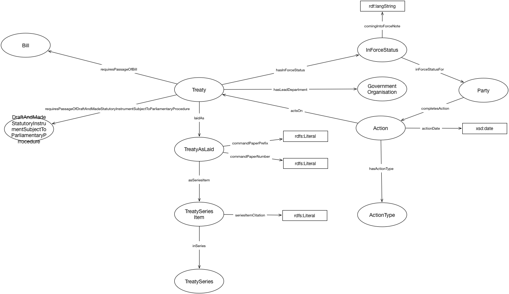

IRI: http://parliament.uk/ontologies/treaty/Action
IRI: http://parliament.uk/ontologies/treaty/ActionType
IRI: http://parliament.uk/ontologies/treaty/Bill
IRI: http://parliament.uk/ontologies/treaty/DraftAndMadeStatutoryInstrumentSubjectToParliamentaryProcedure
IRI: http://parliament.uk/ontologies/treaty/GovernmentOrganisation
IRI: http://parliament.uk/ontologies/treaty/InForceStatus
IRI: http://parliament.uk/ontologies/treaty/Party
IRI: http://parliament.uk/ontologies/treaty/Treaty
IRI: http://parliament.uk/ontologies/treaty/TreatyAsLaid
IRI: http://parliament.uk/ontologies/treaty/TreatySeries
IRI: http://parliament.uk/ontologies/treaty/TreatySeriesItem
IRI: http://parliament.uk/ontologies/treaty/actsOn
IRI: http://parliament.uk/ontologies/treaty/asSeriesItem
IRI: http://parliament.uk/ontologies/treaty/completesAction
IRI: http://parliament.uk/ontologies/treaty/hasActionType
IRI: http://parliament.uk/ontologies/treaty/hasInForceStatus
IRI: http://parliament.uk/ontologies/treaty/hasLeadDepartment
IRI: http://parliament.uk/ontologies/treaty/inForceStatusFor
IRI: http://parliament.uk/ontologies/treaty/inSeries
IRI: http://parliament.uk/ontologies/treaty/laidAs
IRI: http://parliament.uk/ontologies/treaty/requiresPassageOfDraftAndMadeStatutoryInstrumentSubjectToParliamentaryProcedure
IRI: http://parliament.uk/ontologies/treaty/requiresPassageOfBill
IRI: http://parliament.uk/ontologies/treaty/actionDate
IRI: http://parliament.uk/ontologies/treaty/comingIntoForceDate
IRI: http://parliament.uk/ontologies/treaty/comingIntoForceNote
IRI: http://parliament.uk/ontologies/treaty/commandPaperNumber
IRI: http://parliament.uk/ontologies/treaty/commandPaperPrefix
IRI: http://parliament.uk/ontologies/treaty/seriesItemCitation
This HTML document was obtained by processing the OWL ontology source code through LODE, Live OWL Documentation Environment, developed by Silvio Peroni.